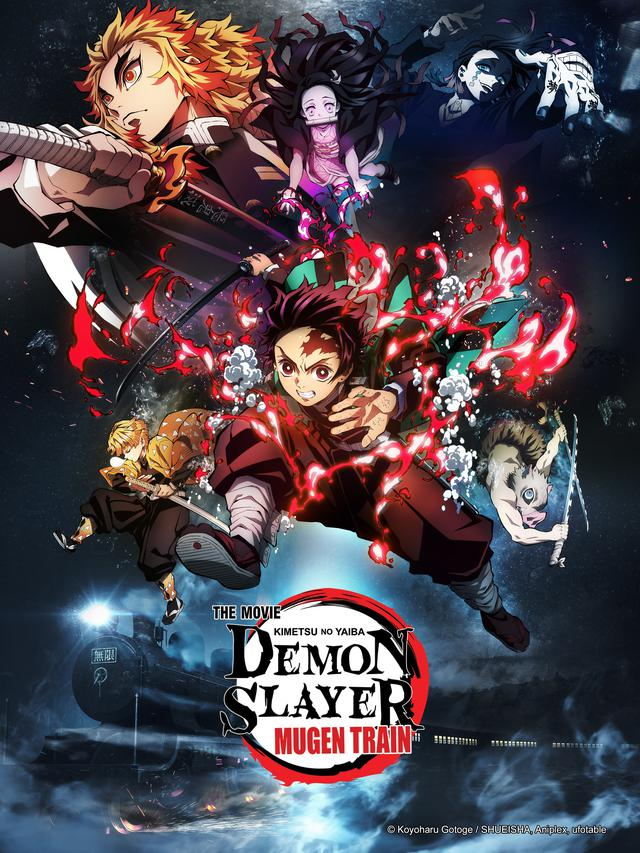

Maiores de 14+
Sinopse: Em Kimetsu no Yaiba, Tanjiro, um bondoso jovem que
Emganha a vida vendendo carvão descobre que sua família
Em foi massacrada por um demônio. E, para piorar, Nezuko,
Esua irmã mais nova e única sobrevivente, também acabou
transformada em um demônio.
Em Demon Slayer, Tanjiro é um menino que vive com a família nas montanhas. De origem humilde, os Kamados
tiram o sustento da venda de carvão. Na casa, vivem o menino, a mãe e os cinco irmãos mais novos. No começo da história, o personagem tem apenas 13 anos
Nezuko Kamado (Kamado Nezuko?) é a irmã mais nova de Tanjiro Kamado e um dos dois membros restantes da família Kamado.
Antes humana, ela foi atacada e transformada em um demônio por Muzan Kibutsuji. Ela é uma das principais protagonistas de Kimetsu no Yaiba: Demon Slayer.
Não tendo sido criado pelos seus pais, Zenitsu passou boa parte de sua vida sozinho, algo que parece ter afetado sua confiança e autoestima. Sem nenhuma
orientação apropriada em sua vida, o rapaz acabou se apaixonando por uma jovem e, para conquistá-la, decidiu lhe dar dinheiro.